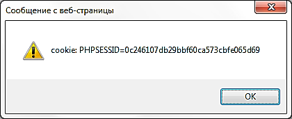

Часть
1.
1.
Из каких пакетов состоит LAMP для чего
нужны эти пакеты?
2.
Что такое Apache и Nginx чем они отличаются?
3.
Где в Linux хранятся основные лог файлы?
4.
Где Apache, Nginx, MySQL хранит лог файлы
5.
Что такое HTML, JAVASCRIPT, PHP, AJAX. В чем различие
между JAVASCRIPT, AJAX и PHP
6.
Что такое PHP, как узнать информацию о
текущей версии PHP и текущих настройка
PHP.
7.
PHP как модуль Apache или PHP как FastCGI. Плюсы
и минусы.
8.
Как настраиваются виртуальные хосты в
связке Apache + Nginx. Схема. Принцип работы.
9.
Для чего нужный файлы .htaccess и .ftpaccess
10.
Какие варианты ограничений к директориям
или файлам веб-сервера вы знаете. Назовите
их.
11.
Для чего в Linux существуют /etc/hosts.allow и
/etc/hosts.deny
Часть
2.
1.
Вид взлома «Загрузка файлов». Способы
защиты.
2.
Вид взлома «Register Globals». Способы защиты.
3.
SQL-инъекции. Способы защиты.
4.
XSS. Способы защиты.
5.
Что такое фишинг. Варианты использования.
Способы защиты.
6.
Что такое DoS-атака. Виды DDoS-атак. Способы
защиты.
7.
Как обнаружить DoS-атаку, какие признаки
могут служить о наличии DDOS-атаки.
8.
Для чего чаще всего злоумышленники
используют DOS-атаки?
9.
Для чего обычно злоумышленники используют
SQL-инъекции?
10.
Для чего обычно злоумышленники используют
XSS?
11.
Что такое PHP-Shell Для чего он используется.
Из каких пакетов состоит LAMP для чего нужны эти пакеты?
LAMP — акроним, обозначающий набор (комплекс) серверного программного обеспечения, широко используемый во Всемирной паутине. LAMP назван по первым буквам входящих в его состав компонентов:
Linux — операционная система Linux;
Apache — веб-сервер;
MySQL — СУБД;
PHP — язык программирования, используемый для создания веб-приложений (помимо PHP могут подразумеваться другие языки, такие как Perl и Python).
Хотя изначально эти программные продукты не разрабатывались специально для работы друг с другом, такая связка стала весьма популярной из-за своей гибкости, производительности и низкой стоимости (все её составляющие являются открытыми и могут быть бесплатно загружены из Интернета). Набор LAMP входит в состав большинства дистрибутивов Linux и предоставляется многими хостинговыми компаниями.
Linux — серверная операционная систем.
Linux— общее название Unix-подобных операционных систем, основанных на одноимённом ядре. Ядро Linux создаётся и распространяется в соответствии с моделью разработки свободного и открытого программного обеспечения.
Дистрибутивы Linux уже давно используются в качестве серверных операционных систем и заняли значительную долю этого рынка; по данным компании Netcraft на февраль 2014 года, семь из десяти самых надёжных интернет-компаний, предоставляющих хостинг, используют Linux на своих веб-серверах.
Linux является ключевым компонентом комплекса серверного программного обеспечения LAMP (Linux, Apache, MariaDB/MySQL, Perl/PHP/Python), который приобрёл популярность среди разработчиков и стал одной из наиболее распространённых платформ для хостинга веб-сайтов
Apache HTTP-сервер – свободный веб-сервер.
Он позволяет подключать внешние модули для предоставления данных, использовать СУБД для аутентификации пользователей, модифицировать сообщения об ошибках и т. д.
Apache имеет встроенный механизм виртуальных хостов. Он позволяет полноценно обслуживать на одном IP-адресе множество сайтов (доменных имён), отображая для каждого из них собственное содержимое.
Для каждого виртуального хоста можно указать собственные настройки ядра и модулей, ограничить доступ ко всему сайту или отдельным файлам.
Apache имеет различные механизмы обеспечения безопасности и разграничения доступа к данным. Основными являются:
Ограничение доступа к определённым директориям или файлам.
Механизм авторизации пользователей для доступа к директории на основе HTTP-аутентификации (mod_auth_basic) и digest-аутентификации (mod_auth_digest).
Ограничение доступа к определённым директориям или всему серверу, основанное на IP-адресах пользователей.
Запрет доступа к определённым типам файлов для всех или части пользователей, например, запрет доступа к конфигурационным файлам и файлам баз данных.
Существуют модули, реализующие авторизацию через СУБД или PAM.
MySQL – это одна из самых популярных и самых распространенных систем управления базами данных (СУБД) в интернете. Ее применение идеально подходит для сайтов, как небольших, так и достаточно крупных.
Данное ПО позволяет подключаться к базе данных, отправлять SQL-запросы и получать ответ.
(Язык PHP полностью адаптирован к написанию Web+приложений и позволяет работать с базами данных. Это позволит генерировать запросы CУБД MySQL прямо с Web+страниц и генерировать новые страницы, содержащие результаты запросов к базе данных. Этот язык хорошо адаптирован для работы с Web+сервером Apache (самый популярный Web+сервер), упрощающим выборку данных и отображение результатов выборки. СУБД MySQL хорошо интегрируется с этим программным обеспечением и позволяет гибко комбинировать его по своему усмотрению в соответствии c поставленными задачами. Это интегрированный компонент, обладающий высокой степенью интеграции “все в одном”.)
PHP— скриптовый язык общего назначения, интенсивно применяемый для разработки веб-приложений. В настоящее время поддерживается подавляющим большинством хостинг-провайдеров и является одним из лидеров среди языков, применяющихся для создания динамических веб-сайтов.
Популярность в области построения веб-сайтов определяется наличием большого набора встроенных средств для разработки веб-приложений. Основные из них:
автоматическое извлечение POST и GET-параметров, а также переменных окружения веб-сервера в предопределённые массивы;
взаимодействие с большим количеством различных систем управления базами данных (включая MySQL);
автоматизированная отправка HTTP-заголовков;
работа с HTTP-авторизацией;
работа с cookies и сессиями;
работа с локальными и удалёнными файлами, сокетами;
обработка файлов, загружаемых на сервер;
Что такое Apache и Nginx чем они отличаются?
Apache HTTP-сервер – свободный веб-сервер. Он позволяет подключать внешние модули для предоставления данных, использовать СУБД для аутентификации пользователей, модифицировать сообщения об ошибках и т. д.
Nginx — веб-сервер и почтовый прокси-сервер, работающий на Unix-подобных операционных системах.
Apache и Nginx — 2 самых широко распространенных веб-сервера с открытым исходным кодом в мире. Вместе они обслуживают более 50% трафика во всем интернете. Оба решения способны работать с разнообразными рабочими нагрузками и взаимодействовать с другими приложениями для реализации полного веб-стека.
Несмотря на то, что у Apache и Nginx много схожих качеств, их нельзя рассматривать как полностью взаимозаменяемые решения. Каждый из них имеет собственные преимущества.
Распространенной схемой использования является размещение Nginx перед Apache в качестве реверс-прокси*. В такой конфигурации Nginx называют фронтендом**, а Apache — бэкендом**. При таком подходе Nginx будет обслуживать все входящие запросы клиентов, и мы получим выигрыш из-за его возможности обрабатывать множество конкурентных запросов.
Nginx будет самостоятельно обслуживать статический контент (изображения, html-файлы, javascript-скрипты и т.д.), а для динамического контента, например для запросов к PHP-страницам, будет передавать запрос к Apache, который будет рендерить (визуализировать) страницу, возвращать ее Nginx'у, а тот в свою очередь будет передавать ее пользователю.
Такая конфигурация очень популярна, Nginx используется в ней для сортировки запросов. Он обрабатывает сам те запросы, которые может и передает Apache только запросы, которые не может обслужить сам, снижая таким образом нагрузку на Apache.
* reverse proxy — тип прокси-сервера, который ретранслирует запросы клиентов из внешней сети на один или несколько серверов, логически расположенных во внутренней сети.
** Front-end и back-end — термины в программной инженерии, которые различают согласно принципу разделения ответственности между внешним представлением и внутренней реализацией соответственно. Front-end — интерфейс взаимодействия между пользователем и основной программно-аппаратной частью (back-end).
Отличия Apache и Nginx:
Apache создает по одному процессу с одним потоком на каждый запрос.(традиционная модель)
Nginx создает процессы каждый из которых может обслуживать тысячи соединений.
Apache может раздавать как статистический, так и динамический контент.
Nginx не имеет возможности самостоятельно обрабатывать запросы к динамическому контенту.
Распределенная конфигурация против централизованной.
Apache имеет опцию, которая позволяет включить конфигурирование на уровне директорий. Если эта опция включена, то Apache будет искать конфигурационные директивы в директориях с контентом в специальных скрытых файлах, которые называются .htaccess.
Nginx не интерпретирует файлы .htaccess и не предоставляет механизм конфигурирования на уровне директорий за пределами основного конфигурационного файла.
Nginx обычно используется там, где предъявляются повышенные требования к производительности.
Где в Linux хранятся основные лог файлы?
Операционные системы ведут подробный протокол собственных действий, записывая всё происходящее в текстовые файлы, log-файлы, лог-файлы или логи. Это обычные текстовые файлы, которые можно прочесть любым текстовым редактором (или средствами самой операционной системы), хотя многие логи доступны на чтение только пользователю root.
Все лог-файлы должны лежать в одном каталоге, который находится тут: /var/log/
К примеру, там находятся такие логи как:
/var/log/auth.log - содержит информацию об авторизации пользователей в системе, включая пользовательские логины и механизмы аутентификации, которые были использованы.
/var/log/boot.log - Содержит информацию, которая регистрируется при загрузке системы.
/var/log/faillog - лог системы linux, содержит неудачные попытки входа в систему.
и множество других.
Где Apache, Nginx, MySQL хранит лог файлы?
Логи web-сервера делятся на два типа: логи ошибок и логи доступа (в него записываются данные о запросах пользователей, как только эти запросы обработаны).
Логи сервера, в том числе логи apache хранятся в каталоге /var/log/. Логи apache имеют такие названия:
(/var/log/apache2/access.log) и (/var/log/apache2/error.log)
В Nginx также два основных лога error_log и access_log.
Они находятся в директории /var/log/nginx/.
Лог-файл MySQL находится в:
/var/log/mysqld.log
Что такое HTML, JAVASCRIPT, PHP, AJAX. В чем различие между JAVASCRIPT, AJAX и PHP?
HTML — стандартизированный язык разметки документов во Всемирной паутине. Большинство веб-страниц содержат описание разметки на языке HTML. Язык HTML интерпретируется браузерами; полученный в результате интерпретации форматированный текст отображается на экране монитора компьютера или мобильного устройства.
JavaScript — прототипно-ориентированный сценарный язык программирования.
JavaScript обычно используется как встраиваемый язык для программного доступа к объектам приложений. Наиболее широкое применение находит в браузерах как язык сценариев для придания интерактивности веб-страницам.
PHP — скриптовый язык общего назначения, интенсивно применяемый для разработки веб-приложений.
(PHP обрабатывается сервером (выполняется код) и итогом этой обработки является html. Непосредственно HTML демонстрируется как есть, без обработки, сервер просто выводит файл по запросу. Соответственно, сайты, созданные посредством PHP, динамичны, созданные на html – статичны.)
AJAX — подход к построению интерактивных пользовательских интерфейсов веб-приложений, заключающийся в «фоновом» обмене данными браузера с веб-сервером. В результате, при обновлении данных веб-страница не перезагружается полностью, и веб-приложения становятся быстрее и удобнее.
JavaScript изначально создавался для того, чтобы сделать web-странички «живыми». Программы на этом языке называются скриптами. В браузере они подключаются напрямую к HTML и, как только загружается страничка – тут же выполняются.
В браузере JavaScript умеет делать всё, что относится к манипуляции со страницей, взаимодействию с посетителем и, в какой-то мере, с сервером:
Создавать новые HTML-теги, удалять существующие, менять стили элементов, прятать, показывать элементы и т.п.
Реагировать на действия посетителя, обрабатывать клики мыши, перемещения курсора, нажатия на клавиатуру и т.п.
Посылать запросы на сервер и загружать данные без перезагрузки страницы (эта технология называется "AJAX").
Получать и устанавливать cookie, запрашивать данные, выводить сообщения и так далее.
Ajax
В классической модели веб-приложения:
Пользователь заходит на веб-страницу и нажимает на какой-нибудь её элемент.
Браузер формирует и отправляет запрос серверу.
В ответ сервер генерирует совершенно новую веб-страницу и отправляет её браузеру и т. д., после чего браузер полностью перезагружает всю страницу.
При использовании AJAX:
Пользователь заходит на веб-страницу и нажимает на какой-нибудь её элемент.
Скрипт (на языке JavaScript) определяет, какая информация необходима для обновления страницы.
Браузер отправляет соответствующий запрос на сервер.
Сервер возвращает только ту часть документа, на которую пришёл запрос.
Скрипт вносит изменения с учётом полученной информации (без полной перезагрузки страницы).
AJAX — это технология, созданная на языке JavaScript, которая асинхронно запрашивает и получает с сервера данные, предоставляющие желаемый результат.
В основе технологии AJAX лежит объект XMLHttpRequest.
XMLHttpRequest — API (интерфейс программирования приложений), доступное в скриптовых языках браузеров, таких как JavaScript. Использует запросы HTTP или HTTPS напрямую к веб-серверу и загружает данные ответа сервера напрямую в вызывающий скрипт. Информация может передаваться в любом текстовом формате, например, в XML или HTML. Позволяет осуществлять HTTP-запросы к серверу без перезагрузки страницы.
PHP выполняется на стороне сервера, JavaScript исполняется браузером, на компьютере пользователя.
Что такое PHP, как узнать информацию о текущей версии PHP и текущих настройка PHP?
PHP — скриптовый язык общего назначения, интенсивно применяемый для разработки веб-приложений.
Узнать информацию о текущей версии PHP и текущих настройка PHP можно с помощью следующих функций:
phpversion ( в PHP 4, PHP 5, PHP 7)
phpversion — Выдает текущую версию PHP.
В качестве параметра можно ввести имя расширения extension. Если задан аргумент extension, phpversion() вернет версию этого расширения или FALSE, если информации о версии нет или расширение в данный момент не подключено.
Пример использования phpversion()
<?php
echo 'Текущая версия PHP: ' . phpversion(); // Выводит строку типа 'Текущая версия PHP: 4.1.1'
echo phpversion('tidy'); // Выводит строку типа '2.0' или ничего, если расширение не подключено
?>
phpinfo ( в PHP 4, PHP 5, PHP 7)
Выводит большое количество информации о текущем состоянии PHP. Сюда входит информация о настройках компиляции PHP, о расширениях, о версии, информация о сервере и среде выполнения (если PHP компилировался как модуль), окружении PHP, версии ОС, о путях, об основных и локальных значениях настроек конфигурации, о HTTP заголовках и лицензии PHP.
Так как каждая система имеет свои особенности, phpinfo() используется в основном для проверки настроек конфигурации.
В качестве параметров данной функции могут использоваться:
|
Имя (константа) |
Значение |
Описание |
|
INFO_GENERAL |
1 |
Строка конфигурации, расположение php.ini, дата сборки, Web-сервер, Система и др. |
|
INFO_CREDITS |
2 |
Разработчики PHP. |
|
INFO_CONFIGURATION |
4 |
Текущие значение основных и локальных PHP директив. |
|
INFO_MODULES |
8 |
Загруженные модули и их настройки. |
|
INFO_ENVIRONMENT |
16 |
Информация о переменных окружения |
|
INFO_VARIABLES |
32 |
Выводит все предопределенные переменные из EGPCS (Environment, GET, POST, Cookie, Server). |
|
INFO_LICENSE |
64 |
Информация о лицензии PHP. См. также » license FAQ. |
|
INFO_ALL |
-1 |
Выводит все приведенное выше. |
Пример использования phpinfo()
<?php
// Показывать всю информацию, по умолчанию INFO_ALL
phpinfo();
// Показывать информацию только о загруженных модулях.
// phpinfo(8) выдает тот же результат.
phpinfo(INFO_MODULES);
?>
PHP как модуль Apache или PHP как FastCGI. Плюсы и минусы.
Интерфейс FastCGI — клиент-серверный протокол взаимодействия веб-сервера и приложения, дальнейшее развитие технологии CGI. По сравнению с CGI является более производительным и безопасным.
Работа сервера в режиме FastCGI не сильно отличается от обычного режима, с одной лишь разницей - процессы не создаются каждый раз при обращении к скриптам, а остаются в памяти, поэтому один процесс может обработать множество запросов, в связи с чем уменьшается отклик сервера.
PHP, как модуль Apache
В данном случае для работы PHP используется модуль веб-сервера apache mod_php.
Достоинства
Самая высокая скорость работы скриптов, по сравнению с другими методами (на больших количествах запросов).
Простота работы, сервер сам обрабатывает скрипты.
Общий конфигурационный файл для всех скриптов (php.ini).
Возможность задания переменных конфигурации PHP в конфигурационном файле web-сервера или средствами файла .htaccess
Недостатки
Все скрипты запускаются с правами с которым работает web-сервер, тем самым если есть необходимость записи в какую либо директорию – права доступа необходимо дать на неё всем, т.е. низкая безопасность.
В случае запуска сторонних приложений скриптами (например, почтовая рассылка), нет возможности идентифицировать пользователя, который запустил процесс.
Излишняя нагрузка на web-сервер. Apache, занятый обработкой скриптов, может медленно отдавать другие статические данные.
Ошибки в скриптах могут привести к неработоспособности всего web-сервера.
PHP, как FastCGI
При этом используется модуль Apache mod_fastcgi, скрипты передаются его средствами на вход интерпретатора PHP.
Достоинства
Все скрипты выполняются с правами пользователя – владельца www-домена.
Возможность индивидуальной настройки PHP для каждого пользователя.
Меньший расход оперативной памяти по сравнению с модулем apache.
Ошибки в скриптах не приводят к падению веб-сервера в отличие от режима PHP как модуль apache.
За счет кэширования некоторых промежуточных данных скрипт не интерпретируется каждый раз при выполнении и достигается более высокая скорость по сравнению с PHP как CGI.
Недостатки
Лишний процесс пользователя (php-cgi) находится в памяти после первого обращения к процессу.
Таким образом, использование FastCGI является более безопасным, как с точки зрения прав доступа, так и с точки зрения наличия ошибок в работе посторонних скриптов, и более экономичным и быстрым способом работы PHP-скриптов. mod_php, в свою очередь, имеет некоторое увеличение быстродействия при большой (в тысячи соединений) нагрузке на сайт.
Как настраиваются виртуальные хосты в связке Apache + Nginx? Схема. Принцип работы.
Apache разделяет свои функциональные возможности и компоненты на отдельные части, которые могут быть настроены и сконфигурированы независимо друг от друга. Базовая часть, которая отвечает за отдельный сайт или домен называется виртуальным хостом (virtual host).
Эта система позволяет администратору использовать один сервер, чтобы раздавать несколько сайтов используя один интерфейс или IP. Это удобно для тех, кто хочет использовать один VPS (физически выделенный сервер) для хранения нескольких сайтов.
Каждый настроенный соответствующим образом домен будет направлять пользователя к определенной директории сервера, содержащей информацию этого сайта, соответствующего домену. При этом посетитель сайта не узнает, что данный сервер хранит и другие сайты. Эта схема может расширяема без каких-либо ограничений со стороны программного обеспечения до тех пор, пока сервер будет справляться с нагрузкой.
Шаг 1 – создание директорий.
sudo mkdir /var/www/mysite
Создание index-файлы с соответствующим содержимым:
sudo nano /var/www/mysite/index.php
Шаг 2 – назначение прав.
Теперь у нас есть структура директорий для наших файлов, но владелец этих директорий - root-пользователь. Если мы хотим, чтобы наши обычные пользователи могли изменять файлы в наших веб-директориях, мы можем изменить их владельца следующим образом:
sudo chown -R $USER:$USER /var/www/mysite/
Переменная $USER содержит имя пользователя, под которым вы залогинены в текущий момент.
Шаг 3 – создание конфигурационных файлов новых сайтов. (Из дефолтного конфига)
Файлы виртуальных хостов задают их конфигурацию, и определяют, как именно веб-сервер Apache будет отвечать на запросы к разным доменам.
По умолчанию, Apache имеет файл виртуального хоста default.conf, который мы можем использовать в качестве отправной точки. Мы собираемся скопировать его, чтобы создать файлы виртуального хоста для каждого из наших доменов.
Мы начнем с одного домена, сконфигурируем его, скопируем для другого домена, и затем снова сделаем необходимые правки. Конфигурация Ubuntu по-умолчанию требует, чтобы каждый файл виртуального хоста заканчивался расширением .conf.
sudo cp /etc/apache2/sites-available/default /etc/apache2/sites-available/mysite
Шаг 3.1 Редактируем конфиги новых сайтов
sudo nano /etc/apache2/sites-available/mysite
Добавляем название сайта и меняем путь к папке.
Шаг 4 – активация новых виртуальных хостов.
sudo a2ensite mysite
После завершения необходимо перезапустить Apache, чтобы изменения вступили в силу:
sudo service apache2 restart
Если создаются несколько хостов чтобы проверить работу второго сайта надо отключить первый:
sudo a2dissite mysite.conf
Активировать второй, перезапустить Apache, активировать первый и снова перезапустить Apache.
Nginx:
Создаём из дефолтного конфига, конфиги для виртуального(ых) хоста(ов):
sudo cp /etc/nginx/sites-available/default /etc/nginx/sites-available/mysite.conf
Редактируем конфиг
server {
listen 80;
root /var/www/mysite;
index index.html index.php index.htm;
server_name mysite.ru www.mysite.ru;
# таким образом всё что касается phpMyadmin, будет отдавать Apache и страница будет корректно отображаться.
location ~* ^(?!/phpmyadmin/).+\.(jpg|jpeg|gif|png|css|zip|tgz|gz|rar|bz2|doc|xls|exe|pdf|ppt|tar|wav|b$
access_log off;
expires 30d;
}
# запрет на доступ к .htaccess
location ~ /\.ht {
deny all;
}
# передача запроса апачу
location / {
proxy_pass http://127.0.0.1:81/; # Порт на котором висит Apache
proxy_set_header X-Real-IP $remote_addr;
proxy_set_header X-Forwarded-for $remote_addr;
proxy_set_header Host $host;
proxy_connect_timeout 300;
proxy_send_timeout 300;
proxy_read_timeout 300;
proxy_redirect off;
proxy_set_header Connection close;
proxy_pass_header Content-Type;
proxy_pass_header Content-Disposition;
proxy_pass_header Content-Length;
}
}
В конфигах прописываются названия сайта, путь к папке, где он находится, передача некоторых запросов на другой порт, к Apache.
Создаём ссылку на новый конфиг:
sudo ln -s /etc/nginx/sites-available/mysite.conf /etc/nginx/sites-enabled/mysite.conf
Рестартуем nginx:
sudo service nginx restart
PS Для одновременной работы нескольких виртуальных хостов необходимо отредактировать файл hosts.
sudo nano /etc/hosts
Необходимо прописать в нем адреса и названия сайтов.
127.0.0.1 localhost
127.0.1.1 guest-desktop
127.0.0.1 mysite.ru
Для чего нужны файлы .htaccess и .ftpaccess?
.htaccess (с точкой в начале имени) - это файл-конфигуратор Apache-серверов, который дает возможность конфигурировать работу сервера в отдельных директориях (папках), не предоставляя доступа к главному конфигурационному файлу (apache/conf/httpd.conf).
Файл .htaccess может быть размещен в корневом каталоге веб-сервера (прямо в каталоге www). В этом случае директивы из такого .htaccess действуют по всему веб-серверу. Также .htaccess может находиться и в конкретном подкаталоге сервера. Действие директив из .htaccess наследуется сверху вниз, но не наоборот. Изменения, внесенные в файл, вступают в силу немедленно. Это связано с тем, что информация из .htaccess перечитывается при каждом обращении к веб-серверу Apache.
Примеры использования файла .htaccess:
Переопределение страниц ошибок
Перенаправление со старого домена на новый
Переопределение главной страницы сайта
Блокировка переходов со сторонних ресурсов
Ограничение доступа к сайту по IP:
Запретить доступ к сайту с IP-адресов 123.4.5.6 и 123.5.4.3
Order Allow,Deny
Allow from all
Deny from 123.4.5.6 123.5.4.3
Запретить доступ к сайту со всех адресов кроме 123.4.5.6 и 123.5.4.3:
Order Deny,Allow
Deny from all
Allow from 123.4.5.6 123.5.4.3
Запретить доступ к сайту для всех:
Deny
from all
(Для сервера FTP. FTP-сервер является неотъемлемой частью любого веб-сервера):
Для изменения прав доступа к директориям Вашей площадки для различных FTP-пользователей можно использовать конфигурационный файл .ftpaccess, структура и функциональность которого во многом похожа на конфигурационный файл Apache — .htaccess.
Для ftp-сервиса предусмотрено управление доступом. Управление производится с помощью файла .ftpaccess. Данный файл создаётся в директории, доступ к которой требуется изменить. В общем случае, содержимое .ftpaccess с использованием директивы «Limit» будет следующим:
<Limit параметр>
...
</Limit>
Параметрами в данном случае могут быть ALL, DIRS, LOGIN, READ, WRITE, либо отдельные ftp-команды.
ALL – все ftp-команды
DIRS – ftp-команды: CDUP, CWD, LIST, MDTM, NLST, PWD, RNFR, STAT, XCUP, XCWD, XPWD
LOGIN – ftp-логин
READ – ftp-команды: RETR, SIZE
WRITE – ftp-команды: APPE, DELE, MKD, RMD, RNTO, STOR, STOU, XMKD, XRMD
Чтобы запретить доступ по ftp, .ftpaccess будет следующим:
<Limit ALL>
Deny from all
</Limit>
Если вы хотите разрешить доступ только с конкретного ip-адреса:
<Limit ALL>
Allow from xx.xx.xx.xx
Deny from all
</Limit>
Где xx.xx.xx.xx – необходимый ip.
Какие варианты ограничений к директориям или файлам веб-сервера вы знаете. Назовите их.
Варианты ограничения доступа.
Самый распространенный и удобный способ ограничения доступа к директориям веб-сервера – файл .htaccess
1. Управление доступом к файлам и каталогам
Защита паролем — это одно, но иногда может понадобиться полностью блокировать доступ пользователей к определенному файлу или папке. Обычно это относится к системным папкам, таким, например, как includes, доступ к которым должны иметь приложения, но не пользователи.
Чтобы сделать это, поместите данный код в файл. htaccess и сохраните его в каталоге к которому закрываете доступ:
deny from all
Однако учитывайте, что доступ будет блокирован для всех пользователей, включая и вас. Открыть доступ для конкретного пользователя можно прописав его IP-адрес. Вот код, который для этого потребуется:
order deny,allow
deny from all
allow from xxx.xxx.xxx.xxx
где xxx. xxx. xxx. xxx — это ваш IP. Для задания разрешенных диапазонов IP-адресов вы можете заменить три последние цифры. Например, написав вместо них «0/12», вы зададите диапазон IP-адресов одной сети, что избавит вас от необходимости вводить в список все разрешенные IP-адреса отдельно.
Если вы хотите заблокировать доступ к определенному файлу, включая сам. htaccess, используйте следующий фрагмент кода:
<Files .htaccess>
order allow,deny
deny from all
</Files>
Если вы хотите указать определенные IP-адреса, которым надо запретить доступ, перечислите их при помощи allow from.
Если же вы хотите заблокировать доступ к файлам определенного типа, используйте этот код:
<FilesMatch ".(htaccess|htpasswd|ini|phps|fla|psd|log|sh)$">
Order Allow,Deny
Deny from all
</FilesMatch>
Второй способ - использовать директиву <Directory> в файле конфигурации.
Определяя настройки доступа к каталогам сайта с помощью директивы <Directory> в одном конфигурационном файле всего сайта, мы получим следующие преимущества:
а) можно быть уверенным, что ничего не пропустим, если вдруг нужно изменить уровень доступа к какому-нибудь ресурсу;
б) повышаем скорость реакции сервера на запросы, т.к. все настройки загружаются при старте Apache.
Ну а мириться придётся с тем, что для каждого каталога необходимо описывать права отдельно (помним, что для подкаталогов права наследуются), даже если они одинаковые.
Для чего в Linux существуют /etc/hosts.allow и /etc/hosts.deny ?
Бывают ситуации, когда надо заблокировать доступ злоумышленникам на наш компьютер. Если разбираться с правилами iptables не нужно, то самое простое решение - добавить ip злоумышленника в hosts.deny. А hosts.allow служит как раз для противоположной цели.
После того, как TCP-пакеты были переданы компьютеру с Linux, среди других действий, их обрабатывают два файла - /etc/hosts.allow и /etc/hosts.deny. Эти два файла работают также, как и стандартные правила брандмауэра. Первоначально демон tcpd обрабатывает пакеты пропуская их через содержимое файла hosts.allow, а затем через файл hosts.deny.
Запомните это, так как если вы что-то напутаете в их содержании, то можете потерять доступ к вашим серверам (если вы настраиваете их удаленно). Если демон не находит ничего соответствующего в hosts.allow, он переходит к обработке файла hosts.deny.
Синтаксис этих файлов очень прост:
служба: IP-адрес или имя хоста
Так, например, если мы хотим блокировать все smtp-пакеты, идущие к нашему серверу от mail.test.ru, нам необходимо ввести в файл hosts.deny следующую строчку:
smtp: mail.test.ru
Мы можем также указать вместо имени хоста и его IP-адрес (лучше всего физический, тем самым избегая проблем в безопасности DNS-сервера):
smtp: 192.168.1.10
Часть 2.
Вид взлома «Загрузка файлов». Способы защиты.
Сайт
может позволять посетителям загружать
свои файлы с последующим отображением
на своих страницах. Это могут быть, к
примеру, изображения в формате JPEG. Важно
ограничить типы загружаемых файлов,
чтобы вместо картинки не был бы загружен
исполняемый файл.
При
загрузке файла PHP в переменной
$_FILES['userfile']['type'] возвращает mime-тип файла,
для JPEG-изображения это будет image/jpeg.
Может показаться, что проверка этого
типа достаточна для уверенности в том,
что загружено именно изображение. Также
встречается идея пытаться читать файл
изображения функциями getimagesize или
imаgecreatefromjpeg. Однако тип файла здесь
определяется на основе содержания, так
что правильное JPEG-изображение, сохраненное
с расширением .php, будет определено как
image/jpeg. А называться будет xxxxx.php. Веб-сервер
же, принимающий решение об обработчике
(handler) для того или иного файла, смотрит
именно на расширение. Злоумышленник
берет корректную картинку, приписывает
к ней в конец (или в EXIF-данные) php-скрипт,
и сервер его исполняет, мы взломаны.
Таким
образом, контролировать для обеспечения
безопасности следует именно расширение
файла, а проверки через определение
mime-type и через попытку открыть файл
функцией getimagesize имеют смысл только для
контроля того, что вместо картинки не
будет загружен мусор, безвредный, но
картинкой не являющийся.
Также
можно хранить файлы в директории,
недоступной для непосредственного
доступа посетителей веб-сервера, а
отдавать их контент через скрипт. Это,
однако же, увеличивает нагрузку на
сервер и требует реализации базовой
функциональности веб-сервера (выдачи
даты последнего изменения и реакции на
условные запросы типа "If-Modified-Since",
выдачи корректных mime-type и поддержки
докачки).
Можно
также в настройках веб-сервера для папки
с пользовательскими файлами попытаться
запретить исполнение скриптов директивой
RemoveHandler, однако в ней придется указывать
всевозможные расширения для файлов
всех поддерживаемых конкретным
веб-сервером обработчиков, что чревато
пропуском какого-нибудь малоизвестного
или нового обработчика.
Пример проверки на размер, mime-type и расширение загружаемого изображения:
if($_POST['action'] == 'changeAvatar') {
if($_FILES["filename"]["size"] > 1024*3*1024)
{ echo ("Размер файла превышает три мегабайта");
exit;
}
// Проверяем загружен ли файл
if(is_uploaded_file($_FILES["filename"]["tmp_name"]))
{
$types_mime = array('image/gif', 'image/jpeg', 'image/jpg', 'image/png');
$types_ext = array('gif', 'jpeg', 'jpg', 'png');
// проверка на тип изображения(mime-type)
$flag_type = false;
foreach ($types_mime as $type) {
if($_FILES["filename"]["type"] == $type) {
$flag_type = true;
break;
}
}
$name = $_FILES["filename"]["name"] ;
$ext = $ext = end((explode(".", $name)));
// проверка расширения изображения
foreach ($types_ext as $type) {
if($ext == $type) {
$flag_type = true;
break;
} else {
$flag_type = false;
}
Вид взлома «Register Globals». Способы защиты.
В
PHP есть функциональность "Register Globals"
— автоматическое заведение переменных
при поступлении их в запросе (GET, POST,
COOKIE). То есть, к примеру, скрипт <?php echo
$a;?>, будучи вызван как script.php?a=hello,
напечатает "hello" при включенных
register_globals. Если программист не следит
за начальной инициализацией переменных,
может возникнуть уязвимость, иллюстрируемая
простым примером:
if
($login == 'admin' && $password == 'пароль админа')
$is_admin = true;
......
if
($is_admin) {
какие-то
действия, разрешенные только
админу
}
Неопытному
глазу может показаться, что без знания
пароля админа мы не установим переменную
$is_admin в true, она останется неопределенной,
и if($is_admin) не выполнится. Но переменная
$is_admin может быть установлена и путем
вызова нашего скрипта с аргументом
?is_admin=1. И из-за того, что мы пропустили
переменную из запроса (например, не
написали в начале скрипта $is_admin = false),
нас и похакали.
Контролировать
такие ситуации легче, если включить в
PHP отображение всех ошибок, предупреждений
(warnings) и замечаний (notices) директивой
error_reporting. Мы бы увидели замечание о том,
что используется неинициализированная
переменная $is_admin. Это одна из причин к
тому, чтобы писать скрипты, включив
диагностические сообщения PHP на максимум.
А также необходимо объявлять используемые
переменные.
SQL-инъекции. Способы защиты.
Атаки
SQL-инъекциями возможны против сайтов,
которые не используют правильное
разделение SQL-запросов и вставляемых в
них данных. Пояснить суть SQL-инъекций
лучше всего на примере.
Пусть
у нас есть доска объявлений, на ней
регистрируются пользователи, мы разрешаем
пользователям через интерфейс удалять
свои записи. Вот
код
PHP-скрипта:
mysql_query('DELETE
FROM messages WHERE id='.$message_id.' AND
user_id='.$user_id);
Пояснения:
переменная message_id приходит от ссылки
"Удалить" ($_REQUEST['message_id']), в ней
содержится идентификатор удаляемой
записи (целое число); переменная user_id
хранится в сессии, мы записываем в нее
идентификатор пользователя при его
успешной авторизации на сайте.
Теперь
предположим, что хакер подделал адрес
ссылки для удаления и вместо «?message_id=15»
отправил нам «?message_id=15 OR 1=1». После
подстановки этого значения в запрос он
станет таким:
DELETE
FROM messages WHERE id=15 OR 1=1 AND user_id=3
Мы
видим, что данные стали выражением, в
выражение попало логическое "или"
(OR), в результате чего хакер "выключает"
проверку user_id и может удалять чужие
записи. В качестве разминки могу
предложить придумать такой запрос,
которым хакер удалит с нашей доски
объявлений все записи разом.
Другой
пример: проверка логина и пароля
пользователя, которые поступают в
переменных $login и $password:
mysql_query('SELECT
id FROM users WHERE login="'.$login.'" AND
password="'.$password.'"');
Если
в $login хакер отправляет «admin" OR 1="1»,
то его пустят на сайт под логином admin
даже без знания пароля:
SELECT
id FROM users WHERE login="admin" OR 1="1" AND
password=""
А
если напишет «" OR 1=1 OR 1="1», то его
вообще пустят под первым попавшимся в
базе данных пользователем.
Таким
образом, основным правилом противодействия
SQL-инъекциям является недопущение
ситуации, когда данные интерпретируются
как выражения. Нужно либо насильно
приводить значения в ожидаемый тип
(функции intval, floatval, если ожидается число),
либо просто заключать их всех в кавычки
и экранировать содержащиеся внутри них
спецсимволы.
В
языке PHP есть специальная функция,
экранирующая текст перед вставкой в
MySQL-запрос, она называется
mysql_real_escape_string. Используемые иногда
вместо нее mysql_escape_string, addslashes и (да, да,
встречаются и такие странные люди)
htmlspecialchars либо неэффективны (см. мануал
на www.php.net), либо предназначены для другого
(как последняя).
Изначально
в язык PHP были введены так называемые
«Волшебные кавычки» (Magic Quotes). Это
функциональность, при которой PHP сам
добавляет обратную косую черту перед
всеми кавычками (и уже имеющимися
обратными косыми чертами) в данных,
поступающих скрипту извне. С одной
стороны, это некоторым образом защищает
скрипт, автор которого не заморачивал
себе голову насчет безопасности своего
творения. С другой стороны, данные
"портятся" все подряд, даже те,
которые и не предначены для запросов к
базе. Не хочется же видеть на сайте
приветствие "Здравствуйте, д\'Артаньян"?
И приходится либо чистить данные функцией
stripslashes, либо вообще отключать magic_quotes в
настройках сервера.
Да
и защита через magic_quotes не стопроцентна:
она не предотвратит первую из приведенных
выше инъекций, с конструкцией «WHERE
id='.$message_id» — кавычек вокруг аргумента
и так нет, хакеру не нужно вставлять
закрывающие кавычки. Также не учитывается
кодировка соединения с базой данных.
В
конце концов, сами авторы PHP не советуют
использовать «Magic Quotes» и прекращают их
поддержку начиная с 6-ой версии PHP.
Таким
образом, уповать на то, что скрипт
работает в условиях действующих
magic_quotes, не следует, но следует обрабатывать
данные перед вставкой в SQL-запросы
функциями mysql_real_escape_string / pg_escape_string и
обязательно заключать значения в
SQL-запросе в кавычки. При этом крайне
желательно подвергать такой обработке
все данные, участвующие в SQL-запросах,
насколько бы надежным ни казался их
источник.
Некоторые
специалисты советуют применять для
этого специальные конструкторы
SQL-запросов, которые сами обеспечивают
требуемое разделение запроса и данных.
XSS. Способы защиты.
XSS
– это сокращение понятия, расшифровываемое
как "межсайтовый скриптинг". В
задачи межсайтового скриптинга и главной
целью XSS является получение cookies
пользователей атакуемого сайта путем
встраивания вредоносного кода в тело
HTML страницы.
В
отличии от SQL инъекции, данный вид атак,
с одной стороны безопасен для сервера
и опасен для пользователей сайта. С
другой стороны, если будут украдены
cookies админа, то получив доступ к панели
администрирования, у хакера будет больше
вероятности добраться и до БД.
Для
того чтобы межсайтовый скриптинг
сработал, хакеру необходимо выявить
хотябы одну xss уязвимость.
Как
защититься от xss
Если
ваш сайт подвергается XSS атаке, вероятнее
всего вы об этом узнаете не скоро, а
может, и вовсе не узнаете. Поэтому для
защиты от xss атак, нужно предотвращать
все подобные попытки, хакеров, на
корню.
Чтобы
придумать метод защиты от какой-либо
атаки, нужно знать, как эти атаки
проводятся и по какому принципу работают,
поэтому давайте разбираться с теорией
взлома через xss уязвимости.
Как
найти xss уязвимость на сайте
Процесс
поиска уязвимых мест очень прост и
сводится к банальному отбору страниц
с формами ввода. После того как вы нашли
все страницы, с которых пользователи
отправляют информацию на сервер, можно
начинать выявление xss уязвимости.
Допустим,
найденная нами форма ввода является
поиском по сайту. Определить является
ли эта форма xss уязвимой, можно несколькими
способами, подставив в поле одну из
следующих инъекций:
<script>alert("cookie:
"+document.cookie)</script>
"><script>alert("cookie:
"+document.cookie)</script>
‘><''>"><script>alert("cookie:
"+document.cookie)</script>
Если
в результате вы увидели нечто подобное:

Значит
вы нашли xss уязвимость, и в дальнейшем
нужно будет ее защитить от атак.
Если
ни один из вариантов не сработал,
попробуйте вставить следующие подборки
кода:
<body
onload=alert(‘xss Уязвимость’)>
<img
src=javascript:alert(‘Защита от XSS не работает’)>
<body
background="javascript:alert(‘эй админ закрой xss
уязвимости’)" >
<style
type="text/javascript">alert(‘Бум
бум!’);</style>
Опять
ничего не вышло? Тогда можете считать,
что данная форма не уязвима к XSS атакам
и уже защищена.
Запомните
все найденные XSS уязвимости, и не спешите
завершать этап поиска слабых мест.
Кроме
форм и полей ввода, XSS уязвимыми могут
быть страницы, обрабатывающие GET
параметры.
Например,
страница такого типа
http://yourdomain.ru/catalog?p=3 Может оказаться
большой дырой в защите сайта.
Подобно
действиям, проделанным ранее в поле
ввода, попробуйте подставить в параметр
вышеперечисленные строки
кода.
http://yourdomain.ru/catalog?p="><script>alert("cookie:
"+document.cookie)
Вполне
вероятно что вы вновь получите сообщение,
как на картинке выше, выводящее
на показ идентификатор сессии
пользователя.
Защита
от XSS атак
Теперь
вы имеете представление о том как
проводятся XSS инъекции, и конечно же
понимаете что вместо вывода сообщения,
информация будет уходить в руки
злоумышленника.
Для
того чтобы защититься от XSS атак и
устранить все возможные XSS уязвимости
вашего сайта, достаточно перед работой
с входными данными пропустить их через
фильтр и заменить все опасные спец
символы безопасными:
$filter
= array("<", ">");
$_GET['q']=str_replace
($filter, "|", $_GET['q']);
Этих
двух маленьких строчек кода достаточно
для избегания больших проблем. Теперь
если попытаться внедрить инъекцию через
адресную строку или форму
ввода
http://yourdomain.ru/searh?q=»><script>alert(«cookie:
«+document.cookie)</script>
Никаких
сообщений мы больше не увидим, поскольку
все скобки в переменной $_GET[‘q’] будут
заменены на безопасные символы «|», и
JS код станет невыполнимым.
В
этом примере показан способ защиты
только одной переменной, на практике
необходимо будет пропускать через
подобный фильтр все входные параметры
на всех страницах с XSS уязвимостями.
Для
массовой проверки входящих данных,
методами POST и GET можно использовать
такую функцию:
function
defender_xss($arr){
$filter
= array("<", ">");
foreach($arr
as $num=>$xss){
$arr[$num]=str_replace
($filter, "|", $xss);
}
return
$arr;
}
//используйте
функцию перед обработкой входящих
данных:
$_REQUEST=defender_xss($_REQUEST);
Кроме
того будет не лишним дополнить фильтр
другими символами для фильтрации:
$filter
= array("<", ">","=","
(",")",";","/");
Альтернативным
способом защиты будет использование
штатных PHP функций:
strip_tags()
— удаляет из строки все HTML-теги, кроме
разрешённых.
htmlspecialchars()
— заменяет все спецсимволы на их
HTML-аналоги.
Каким
образом воруются cookie пользователей?
Не
всем сразу может быть ясно, как происходит
процесс получения cookie пользователей.
Все
дело в том, что после выявления XSS
уязвимостей, хакер создает ссылку с
вредоносным кодом. В этом коде данные
из куков передаются на сторонний сервер,
на котором обрабатываются и сохраняются,
затем пользователь перенаправляется
на страницу обратно. Все это происходит
незаметно для человеческого глаза, и
поэтому атака остается
необнаруженной.
Зараженные
ссылки несущие в себе XSS атаки, попадают
пользователям разнообразными способами,
путем передачи ссылок в соц сетях , атах
форумах и др местах скопления
юзеров.
Атаки
построенные по принципу межсайтингового
скриптинга делятся на два типа:
Активные
XSS атаки – подразумевают внедрение
ссылки в саму страницу ресурса, сделать
это можно путем вставки вредоносного
кода в запись БД, или загрузив картинку
на сайт указав в ней ссылку с вредоносным
кодом.
Пассивные
XSS атаки – пользователь сам должен
вставить ссылку в адресную строку или
просто кликнуть по ней.
Конечно
ссылки предоставляемы хакерами, не
выглядят таким
образом:
http://yourdomain.ru/searh?q=»><script>alert(«cookie:
«+document.cookie)</script>
Существует
множество способов закодировать
содержание ссылки, таким образом скрыв
смысл от жертвы. Кодировать можно в
base64, hex, или использовать сторонний
сервер для
маршрутизации.
http://hakerserver.com/82qdm6k
data:text/html;base64,aHR0cDovL2luZm9zZXJ2aWNlNjozMDAwL2luZm8vc2VhcmNoLmh0bWw/cT0iPjxzY3JpcHQ+YWxlcnQoJycpPC9zY3JpcHQ+
http://infoservice6:3000/info/search.html?q=%22%3E%3Cscript%3Ealert(»)%3C%2Fscript%3E
Согласитесь
теперь сложно догадаться о том, что
внутри ссылки зашифрован зловредный
код. А если снабдиться ссылку красивыми
вешанием лапши на уши пользователям и
рассказать какая полезна эта ссылка,
то единицы не перейдут по ней. Но это
уже из области социальной инженерии…
В
дополнение к вышеприведенному способу
защиты, можно использовать и защиту от
XSS на сервере, прописав в .htaccess специальный
код.
Итак
подведем итоги, данной статье, мы
научились выявлять XSS уязвимости на
своем сайте, создали фильтр не допускающий
внедрения XSS инъекций, и защитились от
XSS атак.
Что такое фишинг. Варианты использования. Способы защиты.
Фишинг — вид интернет-мошенничества, целью которого является получение доступа к конфиденциальным данным пользователей — логинам и паролям. Это достигается путём проведения массовых рассылок электронных писем от имени популярных брендов, а также личных сообщений внутри различных сервисов, например, от имени банков или внутри социальных сетей. В письме часто содержится прямая ссылка на сайт, внешне неотличимый от настоящего, либо на сайт с редиректом. После того, как пользователь попадает на поддельную страницу, мошенники пытаются различными психологическими приёмами побудить пользователя ввести на поддельной странице свои логин и пароль, которые он использует для доступа к определённому сайту, что позволяет мошенникам получить доступ к аккаунтам и банковским счетам.
Фишинг — одна из разновидностей социальной инженерии, основанная на незнании пользователями основ сетевой безопасности: в частности, многие не знают простого факта: сервисы не рассылают писем с просьбами сообщить свои учётные данные, пароль и прочее.
Варианты использования:
Социальная инженерия
Человек всегда реагирует на значимые для него события. Поэтому фишеры стараются своими действиями встревожить пользователя и вызвать его немедленную реакцию. Поэтому, к примеру, электронное письмо с заголовком «чтобы восстановить доступ к своему банковскому счёту …», как правило, привлекает внимание и заставляет человека пройти по веб-ссылке для получения более подробной информации.
Веб-ссылки
Большинство методов фишинга сводится к тому, чтобы замаскировать поддельные ссылки на фишинговые сайты под ссылки настоящих организаций. Адреса с опечатками или субдомены часто используются мошенниками.
Например, http://www.yourbank.example.com/ похож на адрес банка Yourbank, а на самом деле он ссылается на фишинговую составляющую сайта example.com.
Обход фильтров
Фишеры часто вместо текста используют изображения, что затрудняет обнаружение мошеннических электронных писем антифишинговыми фильтрами. Но специалисты научились бороться и с этим видом фишинга. Так, фильтры почтовых программ могут автоматически блокировать изображения, присланные с адресов, не входящих в адресную книгу.
Веб-сайты
Обман не заканчивается на посещении жертвой фишингового сайта. Некоторые фишеры используют JavaScript для изменения адресной строки. Это достигается либо путём размещения картинки с поддельным URL поверх адресной строки либо закрытием настоящей адресной строки и открытием новой с поддельным URL.
Злоумышленник может использовать уязвимости в скриптах подлинного сайта. Этот вид мошенничества (известный как межсайтовый скриптинг) наиболее опасен, так как пользователь авторизуется на настоящей странице официального сайта, где всё, — от веб-адреса до сертификатов, выглядит подлинным. Подобный фишинг очень сложно обнаружить без специальных навыков.
Новые угрозы
Сегодня фишинг выходит за пределы интернет-мошенничества, а поддельные веб-сайты стали лишь одним из множества его направлений. Письма, которые якобы отправлены из банка, могут сообщать пользователям о необходимости позвонить по определённому номеру для решения проблем с их банковскими счетами. Эта техника называется вишинг (голосовой фишинг). Позвонив на указанный номер, пользователь заслушивает инструкции автоответчика, которые указывают на необходимость ввести номер своего счёта и PIN-код. К тому же вишеры могут сами звонить жертвам, убеждая их, что они общаются с представителями официальных организаций, используя фальшивые номера. В конечном счёте, человека также попросят сообщить его учётные данные.
Набирает свои обороты и SMS-фишинг, также известный как смишинг. Мошенники рассылают сообщения, содержащие ссылку на фишинговый сайт, — входя на него и вводя свои личные данные, жертва аналогичным образом передаёт их злоумышленникам. В сообщении также может говориться о необходимости позвонить мошенникам по определённому номеру для решения «возникших проблем». Встречается и следующий вид SMS-фишинга: на подставном сайте для получения какой-либо услуги просят отправить SMS на предложенный номер или ввести свой номер сотового телефона, чаще всего это фэйки файлообменных сервисов. В первом случае с телефонного счёта абонента списывается крупная (возможно, максимальная предусмотренная контрактом) сумма, во втором случае номер добавляется в базу адресов рассылки SMS-спама и может использоваться для дальнейших фишинговых действий.
Существуют различные методы для борьбы с фишингом, включая законодательные меры и специальные технологии, созданные для защиты от фишинга.
Обучение пользователей
Один из методов борьбы с фишингом заключается в том, чтобы научить людей различать фишинг и бороться с ним. Люди могут снизить угрозу фишинга, немного изменив своё поведение. Так, в ответ на письмо с просьбой «подтверждения» учётной записи (или любой другой обычной просьбой фишеров) специалисты советуют связаться с компанией, от имени которой отправлено сообщение, для проверки его подлинности. Кроме того, эксперты рекомендуют самостоятельно вводить веб-адрес организации в адресную строку браузера вместо использования любых гиперссылок в подозрительном сообщении.
Технические методы:
Браузеры, предупреждающие об угрозе фишинга
Другим направлением борьбы с фишингом является создание списка фишинговых сайтов и последующая сверка с ним.
Усложнение процедуры авторизации
Борьба с фишингом в почтовых сообщениях
Специализированные спам-фильтры могут уменьшить число фишинговых электронных сообщений, получаемых пользователями. Эта методика основывается на машинном обучении и обработке естественного языка при анализе фишинговых писем.
Что такое DoS-атака. Виды DDoS-атак. Способы защиты.
DoS (от англ. Denial of Service — отказ в обслуживании) — хакерская атака на вычислительную систему с целью довести её до отказа, то есть создание таких условий, при которых добросовестные пользователи системы не могут получить доступ к предоставляемым системным ресурсам (серверам), либо этот доступ затруднён.
Главной
целью любой DoS-атаки является перегрузка
сервера и создание таких условий его
работы, при которых посетитель либо не
может получить доступ к нему, либо доступ
становится настолько медленным, что
полноценная работа с сайтом становится
невозможной. Как правило злоумышленники
добиваются своей цели, отправляя на
сервер бесчисленное множество бесполезных
запросов, в результате сервер, обрабатывая
их, перестает реагировать на запросы
пользователей, они просто "тонут"
в информационном "шуме". DoS-атаки
используются злоумышленниками для
оказания давления на неугодный им
сетевой ресурс. Например, DoS-атакам часто
подвергаются сайты компаний, занимающиеся
торговлей через Интернет. Поскольку
каждые сутки простоя таких сайтов грозят
компании убытками, иногда значительными,
злоумышленники шантажируют и угрожают
владельцам DoS-атакой требуя выплатить
им некоторую сумму. DoS-атаки могут
использоваться в конкурентной борьбе,
например известен случай, когда одна
из компаний спутникового телевидения
из Массачусетса оплатила DoS-атаку на
сайты своих прямых конкурентов. Пока
сайты конкурентов были недоступны,
пользователи обращались за услугами к
заказчику атаки.
DoS-атаки
бывают одиночные - организуемые с одного
компьютера, и распределенные (DDoS) в
которых используется множество
компьютеров.
ОСНОВНЫЕ
ВИДЫ DDOS-АТАК
В
общем-то, разновидностей DDoS довольно
много, и ниже мы постарались перечислить
большинство типовых атак, с описанием
принципа действия каждого типа
атаки.
UDP
ФЛУД
Один
из наиболее действенных, и в то же время,
простых видов атак. Используется UDP
протокол, где не требуется установление
сессии с отправкой любого типа ответа.
В случайном порядке злоумышленник
атакует порты сервера, отсылая огромное
количество пакетов данных. В результате
машина начинает проверять, используется
ли порт, на который приходит пакет,
каким-либо приложением. А поскольку
таких пакетов — масса, то машина любой
мощности просто не справляется с задачей.
Как результат — все ресурсы машины
«съедены», и сервер «ложится».
Наиболее
простой способ защиты от такого типа
атак — это блокирование UDP трафика.
ICMP
ФЛУД
Злоумышленник
постоянно пингует сервер жертвы, в ходе
чего последний постоянно отдает ответы.
Пингов огромное количество, и, как
результат — съедаются ресурсы сервера,
и машина становится недоступной.
В
качестве меры защиты можно использовать
блокировку ICMP-запросов, на уровне
брандмауэра. К сожалению, в таком случае
пинговать машину не получится по понятным
причинам.
SYN
ФЛУД
В
этом типе атаки используется отправка
SYN-пакета серверу жертвы. Как результат
— сервер отвечает пакетом SYN-ACK, а машина
злоумышленника должна отправить
ACK-ответ, но он не отправляется. Результат
— открытие и подвисание огромного
количества соединений, которые закрываются
только по истечению таймаута.
При
превышении граничного количества
запросов/ответов сервер жертвы перестает
принимать пакеты любого типа, и становится
недоступным.
MAC
ФЛУД
Необычный
тип атаки, в котором объектом становится
сетевое оборудование многих типов.
Злоумышленник начинает отправлять
большое количество Ethernet-пакетов с
совершенно различными MAC-адресами. Как
результат — свитч начинает резервировать
под каждый из пакетов определенное
количество ресурсов, и если пакетов
много, то свитч выделяет все доступные
запросы, и подвисает. Худший вариант —
сбой таблицы маршрутизации.
PING
OF DEATH
Сейчас
этот тип атак не является сколько-нибудь
серьезной проблемой, хотя раньше это
был распространенный вариант атаки.
Смысл такого типа атаки — переполнение
буфера памяти из-за превышения максимально
доступного размера IP пакета, и как
результат — отказ сервера и сетевого
оборудования от обслуживания любого
типа пакетов.
SLOWLORIS
Сфокусированная
атака такого типа позволяет малыми
силами добиться крупных результатов.
Другими словами, используя не самый
мощный сервер, можно «положить» гораздо
более производительное оборудование.
При этом не требуется задействовать
другие протоколы. При таком типе атак
сервер злоумышленника открывает
максимальное количество НТТР-соединений,
и старается держать их открытыми также
как можно дольше.
Само
собой, количество подключений на сервере,
подверженному атаке, заканчивается, и
полезные запросы перестают приниматься
и обрабатываться.
ОТРАЖЁННЫЕ
АТАКИ
Необычный
тип атаки, когда сервер злоумышленника
отправляет пакеты с фальшивым IP
отправителя, причем отправка идет по
максимально возможному количеству
машин. Все затронутые такими действиями
сервера отправляют ответ на укзанный
в пакете IP, в результате чего получатель
не справляется с нагрузкой и «подвисает».
При этом производительность сервера
атакующего может быть в 10 раз ниже
планируемой мощности атаки. Сервер,
рассылающий 100 Мбит/сек ложных запросов,
может полностью положить гигабитный
канал сервера жертвы.
ДЕГРАДАЦИЯ
При
таком типе атаки сервер злоумышленника
симулирует действия реального человека
или целой аудитории. Как пример самого
простого варианта — можно отсылать
запросы для одной и той же страницы
ресурса, причем делать это тысячи раз.
Наиболее простой способ решения проблемы
— временное сообщение об ошибки с
блокированием атакуемой страницы.
Более
сложный тип атаки — запрос большого
количества различных ресурсов сервера,
включая медиафайлы, страницы и все
прочее, в результате чего сервер жерты
перестает работать.
Сложные
атаки такого типа довольно сложно
отфильтровать, как результат — приходится
использовать специализированные
программы и сервисы.
АТАКА
НУЛЕВОГО ДНЯ
Так
называют атаки, где используются
неизвестные доселе уязвимости/слабые
места сервиса. Для борьбы с проблемой
необходимо изучить такой тип атаки,
чтобы можно было что-то предпринять.
Вывод:
наиболее сложным типом атаки являются
комбинированные, где используются
различные виды DDoS. Чем сложнее комбинация,
тем сложнее от нее защититься. Общей
проблемой для DDoS, вернее, для жертв DDoS,
является общедоступность такого типа
атак. В Сети есть большое количество
приложений и сервисов, позволяющих
бесплатно или почти бесплатно осуществлять
мощнейшие атаки.
Есть
несколько универсальных советов, которые
помогут подготовить систему к
DoS-атаке.
Все
серверы, которые имеют доступ во внешнюю
сеть, должны быть подготовлены к удаленной
аварийной перезагрузке.
Также
желательно наличие второго сетевого
интерфейса, через который по ssh-соединению
можно быстро получить доступ к
серверу.
Программное
обеспечение, которое установлено на
сервере, должно быть в актуальном
состоянии, а именно: должно быть
установлено последнее ПО, касающееся
обеспечения безопасности системы.
Все
сетевые сервисы должны быть защищены
брандмауэром.
Как обнаружить DoS-атаку, какие признаки могут служить о наличии DDOS-атаки.
Существует
мнение, что специальные средства для
выявления DoS-атак не требуются, поскольку
факт DoS-атаки невозможно не заметить.
Во многих случаях это действительно
так. Однако достаточно часто наблюдались
удачные DoS-атаки, которые были замечены
жертвами лишь спустя 2-3 суток. Бывало,
что негативные последствия атаки
(флуд-атаки) выливались в излишние
расходы на оплату избыточного
Internet-трафика, что выяснялось лишь при
получении счёта от Internet-провайдера.
Кроме того, многие методы обнаружения
атак неэффективны вблизи объекта атаки,
но эффективны на сетевых магистральных
каналах. В таком случае целесообразно
ставить системы обнаружения именно
там, а не ждать, пока пользователь,
подвергшийся атаке, сам её заметит и
обратится за помощью. К тому же для
эффективного противодействия DoS-атакам
необходимо знать тип, характер и другие
характеристики DoS-атак, а оперативно
получить эти сведения как раз и позволяют
службы обеспечения безопасности. Они
помогают произвести некоторые настройки
системы. Но определить, была ли данная
атака произведена злоумышленником,
либо отказ в обслуживании был следствием
нештатного события, они не могут. В
соответствии с правилами политики
обеспечения безопасности, при обнаружении
DoS или DDoS-атаки потребуется её регистрация
для дальнейшего аудита. После того, как
атака была зафиксирована, могут
потребоваться службы обеспечения
безопасности для некоторых корректировок
в системе и для её возвращения к прежнему
уровню работы. Также для обнаружения
DDoS-атаки могут использоваться службы,
не связанные с безопасностью, например,
перенаправление трафика по другим
каналам связи, включение резервных
серверов для копирования информации.
Таким образом, средства для обнаружения
и предотвращения DDoS-атак могут сильно
различаться в зависимости от вида
защищаемой системы.
Методы
обнаружения DoS-атак можно разделить на
несколько больших групп:
сигнатурные
— основанные на качественном анализе
трафика.
статистические
— основанные на количественном анализе
трафика.
гибридные
(комбинированные) — сочетающие в себе
достоинства обоих вышеназванных методов.
Формальные признаки атак, по которым их можно легко определить.
Во-первых, число процессов Апача:
ps aux | grep apache | wc -l
Если их более 20-30, то это уже повод для беспокойства.
Далее обязательно просмотреть глобальные логи Апача на предмет наличия аномалий (например, запросов без указания вихоста):
/var/log/apache2/error.log
/var/log/apache2/access.log
Далее, стоит просмотреть логи всех сайтов и обратить особое внимание на самые большие из них.
Если "большой" лог найден, то его стоить проанализировать на предмет аномалий следующим образом:
cat log_type.log | awk '{print $1}' | sort | uniq -c
Эта команда укажет число запросов до сайта с уникальных айпи, вывод ее будет в виде:
14 95.67.xx.xx
21 95.68.xx.xx
25 95.68.xx.xx
15 95.68.xx.xx
Таким образом, если какой-то IP / блок айпи заваливает сайт запросами, это будет видно по резко уходящим в верх значениям запросов для IP злоумышленников.
Если же используется Nginx, то также обязательно просматривать логи:
/var/log/nginx/error.log
/var/log/nginx/access.log
Для чего чаще всего злоумышленники используют DOS-атаки?
DoS (от англ. Denial of Service — отказ в обслуживании) — хакерская атака на вычислительную систему с целью довести её до отказа, то есть создание таких условий, при которых добросовестные пользователи системы не могут получить доступ к предоставляемым системным ресурсам (серверам), либо этот доступ затруднён.
Главной целью любой DoS-атаки является перегрузка сервера и создание таких условий его работы, при которых посетитель либо не может получить доступ к нему, либо доступ становится настолько медленным, что полноценная работа с сайтом становится невозможной.
В целом при разговоре о причинах DoS/DDoS-атак чаще всего выделяют следующие случаи:
конкуренция – недобросовестные компании могут заказывать атаки на ресурсы своих конкурентов для того, чтобы парализовать их работу;
личная вражда – атаки могут быть организованы хакерами и по каким-нибудь личным причинам, чаще всего в этом случае страдают крупные корпорации и правительственные ресурсы, иногда атаки становятся результатом политического протеста;
вымогательство – при помощи DoS/DDoS-атаки хакеры могут получить доступ и заблокировать систему, требуя выплату определенной суммы за разблокировку;
шантаж – в некоторых случаях хакеры сообщают владельцам сайтов, что готовы не производить атаку на их ресурс, но только в случае, если те переведут на счет хакеров определенную денежную сумму;
развлечение – так как подобные атаки становятся все более распространенными, все большее количество людей хочет попробовать себя в этом деле, зачастую только ради забавы.
Кстати, именно из-за такого разнообразия возможных причин предугадать DDoS-атаку становится практически невозможно – к сожалению, так или иначе ваш сайт находится в зоне риска, хотя, безусловно, чем более известен сайт, тем выше вероятность того, что кто-то хочет провести подобную атаку.
Для чего обычно злоумышленники используют SQL-инъекции?
Внедрение SQL, в зависимости от типа используемой СУБД и условий внедрения, может дать возможность атакующему выполнить произвольный запрос к базе данных (например, прочитать содержимое любых таблиц, удалить, изменить или добавить данные), получить возможность чтения и/или записи локальных файлов и выполнения произвольных команд на атакуемом сервере.
Злоумышленник может получить личную информацию пользователей сайта. Изменять пароли и другие записи базы данных.
Для чего обычно злоумышленники используют XSS?
Межсайтовый
скриптинг использует известные уязвимости
в web-приложениях, серверах (или в системных
плагинах, относящихся к ним). Используя
одну из них, злоумышленник встраивает
вредоносный контент в содержание уже
взломанного сайта. В результате
пользователь получает объединенный
контент в веб-браузере, который был
доставлен из надежного источника, и,
таким образом, действует в соответствии
с разрешениями, предоставленными для
этой системы. Сумев внедрить необходимый
скрипт в веб-страницу, злоумышленник
может получить повышенные привилегии
в отношении работы с веб-страницами,
cookies и другой информацией, хранящейся
в браузере для данного пользователя.
XSS-атаки обычно используются в следующих преступных целях:
Кража аккаунта;
Получение доступа к защищенным или конфиденциальным данным;
Получение бесплатного доступа к платному контенту;
Слежение за посещением сайтов пользователем;
Повреждение веб-приложения;
DOS-атаки
Что такое PHP-Shell. Для чего он используется.
Это некий вредоносный скрипт (программа), который злоумышленники используют для управления чужими сайтами и серверами.
Хотя тут требуется уточнение. Вредоносным он становится в случае если он загружен не вами на ваш сервер, а злоумышленником. Если он загружен вами, то обычно это очень даже полезный инструмент.
PHPShell - скрипт php, позволяющий выполнять на веб-сервере shell-команды.
В большинстве случаев, после успешного взлома сайта, атакующий оставляет на сайте специализированные программы, коды или врезки в код легальных скриптов, обеспечивающие ему полный доступ к серверу. Эти программы, скрипты и коды называются шеллами.
Веб-шеллы, шеллы - обеспечивают атакующему полный доступ с возможностью контроля и управления над файловой системой сервера взломанного сайта и его баз данных.
Шеллы позволяют атакующему полностью управлять сервером (и самим сайтом соответственно) не проходя никакой аутентификации.
Веб-шеллы это мощные программные разработки, основной функционал которых заключается в работе с файловой системой сервера на уровне root доступа.
Как правило, веб-шеллы имеют графическую оболочку и удобный интерфейс, на подобии всем известных Far, MC, Norton Commander и др.
При открытии такого скрипта браузером - открывается специально-сформированная страница, на которой можно вводить команды, просматривать папки и файлы, закачивать новые файлы, редактировать существующие и т.д. В данном случае все напрямую зависит от возможностей скрипта-шелла и настроек сервера. Очень важно знать то, что на большинстве серверов наш скриптовый шелл будет исполняться от имени его обработчика. Так, если наш шелл написан на php, то и исполняться он будет с правами либо текущего пользователя (если установлены соответствующие настройки), либо веб-сервера (apache, nginx, IIS и т.д.).